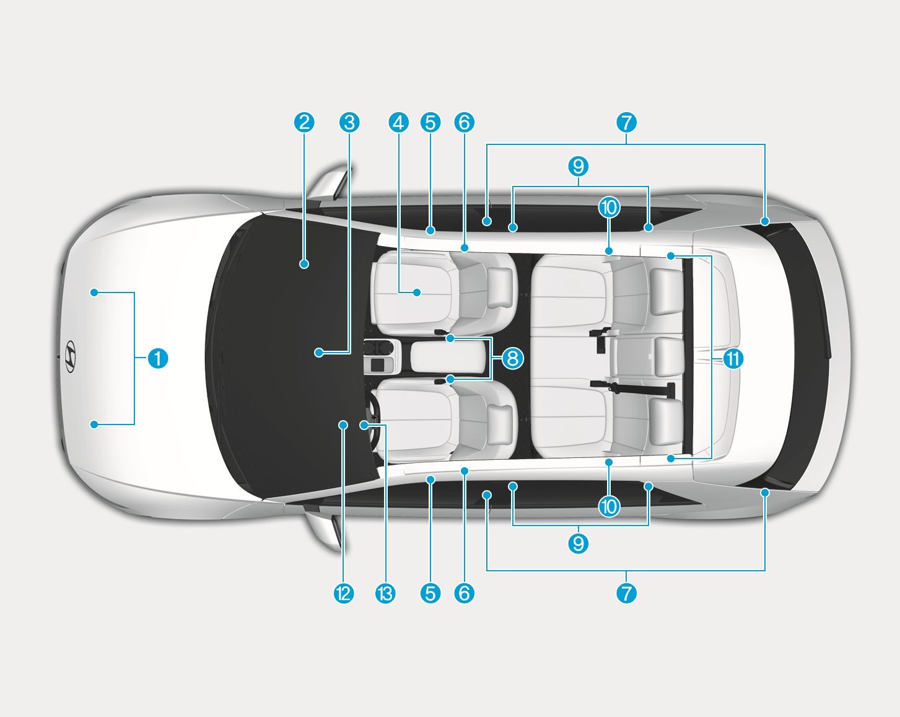

에어백 관련 부품
에어백의 작동과 관련된 센서 및 부품의 위치와 명칭은 다음과 같습니다.

1C_AirbagPartsOverview
- 정면 충돌 센서
- 동승석 에어백 모듈
- 에어백 제어 모듈 / 전복 감지 센서
- 승객 구분 센서(OCS)
- 측면 충돌 감지 센서(압력)
- 사이드 에어백 모듈
- 리트랙터 프리텐셔너
- 운전자/동승석 안전벨트 버클 센서
- 측면 충돌 감지 센서(가속도)
- 커튼 에어백 모듈
- 뒷좌석 사이드 에어백 모듈
- 에어백 경고등
- 운전석 에어백 모듈